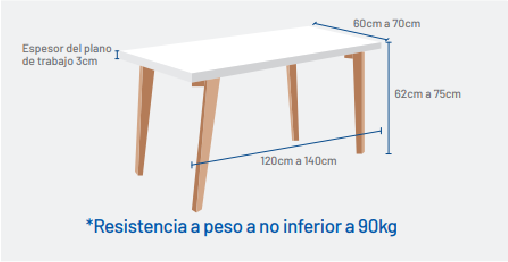

<article>
    <li>El teclado debe ubicarse en el escritorio para facilitar el apoyo de antebrazo cuando digite</li>
    <li>Es importante dejar el espacio entre lo pies libres sin elementos extraños.</li>
    
</article>